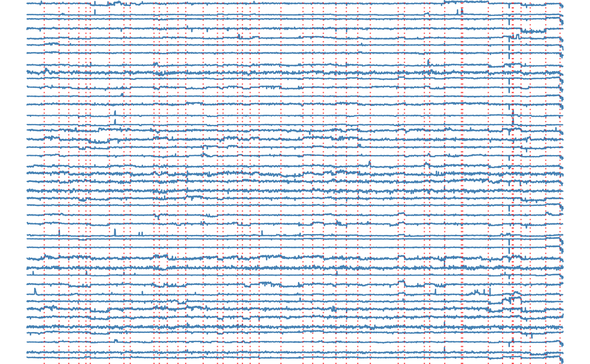
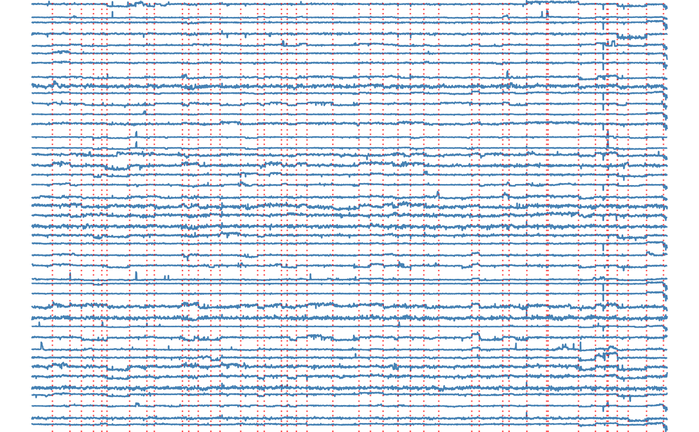

Transcription Profiling of 57 Human Bladder Carcinoma Samples
Source:R/fastcpd_data.R
transcriptome.RdTranscriptome analysis of 57 bladder carcinomas on Affymetrix HG-U95A and HG-U95Av2 microarrays
Format
A data frame with 2215 rows and 43 variables:
- 3
Individual 3
- 4
Individual 4
- 5
Individual 5
- 6
Individual 6
- 7
Individual 7
- 8
Individual 8
- 9
Individual 9
- 10
Individual 10
- 14
Individual 14
- 15
Individual 15
- 16
Individual 16
- 17
Individual 17
- 18
Individual 18
- 19
Individual 19
- 21
Individual 21
- 22
Individual 22
- 24
Individual 24
- 26
Individual 26
- 28
Individual 28
- 30
Individual 30
- 31
Individual 31
- 33
Individual 33
- 34
Individual 34
- 35
Individual 35
- 36
Individual 36
- 37
Individual 37
- 38
Individual 38
- 39
Individual 39
- 40
Individual 40
- 41
Individual 41
- 42
Individual 42
- 43
Individual 43
- 44
Individual 44
- 45
Individual 45
- 46
Individual 46
- 47
Individual 47
- 48
Individual 48
- 49
Individual 49
- 50
Individual 50
- 51
Individual 51
- 53
Individual 53
- 54
Individual 54
- 57
Individual 57
Source
<https://www.ebi.ac.uk/biostudies/arrayexpress/studies/E-TABM-147>
<https://github.com/cran/ecp/tree/master/data>
Examples
# \donttest{
if (requireNamespace("ggplot2", quietly = TRUE)) {
result <- fastcpd.mean(transcriptome$"10", trim = 0.005)
summary(result)
plot(result)
result_all <- fastcpd.mean(
transcriptome,
beta = (ncol(transcriptome) + 1) * log(nrow(transcriptome)) / 2 * 5,
trim = 0
)
plots <- lapply(
seq_len(ncol(transcriptome)), function(i) {
ggplot2::ggplot(
data = data.frame(
x = seq_along(transcriptome[, i]), y = transcriptome[, i]
),
ggplot2::aes(x = x, y = y)
) +
ggplot2::geom_line(color = "steelblue") +
ggplot2::geom_vline(
xintercept = result_all@cp_set,
color = "red",
linetype = "dotted",
linewidth = 0.5,
alpha = 0.7
) +
ggplot2::theme_void()
}
)
if (requireNamespace("gridExtra", quietly = TRUE)) {
gridExtra::grid.arrange(grobs = plots, ncol = 1, nrow = ncol(transcriptome))
}
}
#>
#> Call:
#> fastcpd.mean(data = transcriptome$"10", trim = 0.005)
#>
#> Change points:
#> 177 264 394 534 578 656 788 811 869 934 960 1051 1141 1286 1319 1367 1567 1657 1724 1906 1972 1994 2041 2058 2143 2200
#>
#> Cost values:
#> 80.49071 38.37606 71.90419 109.9683 171.8534 18.56209 58.95214 3.133287 24.77084 49.27842 36.67618 63.41361 57.65488 91.34648 7.042687 46.13709 69.31514 141.4311 290.2077 77.60234 52.61751 41.31567 71.81727 13.09335 36.00007 14.8323 12.87647
 
# }

# }